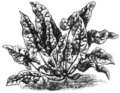

Suffering succulents!If your indoor cacti and other succulents suffered from neglect during the gardening season, now's the time to make amends. British expert Roy Mottram says that although people associate succulents with harsh alkaline soils, their soil pH should be slightly acidic-ideally, 5.5. So check your tap water for alkalinity if your plants seem unhealthy. Mottram also recommends giving succulents weak doses (1:1:2) of N-P-K fertilizer and adding organic matter or sterile soil for trace elements.
Succulents can tolerate fairly high levels of soluble salts-if the pH isn't too highbut extreme salinity kills roots. So water occasionally but thoroughly to wash out accumulated salts, and repot any plants that seem to be either waterlogged or difficult to wet; they're most likely full. of salts.
Control greenhouse whiteflies. Yellow sticky boards control greenhouse whiteflies [EDITOR'S NOTE: See "Getting the Most From Your Solar Greenhouse" on page 74], but according to Japanese horticulturists, their effective range is only one yard. So space them no farther than three feet from plants and from each other. Their efficiency also drops sharply when daily highs are under 80°F.
Beware metallic blight! Some landscapers and homeowners don't remove the soilballing wire mesh from trees and shrubs when transplanting, because they think the wire will break down quickly in the soil. Not so! Dr. James Feucht of the Colorado Extension Service found that mesh buried for 15 years can restrict root growth and even kill formerly healthy plantsespecially during a drought. (The size of the mesh openings doesn't matter.) The moral? Remove wire from root balls when planting.
More on controlling soil disease. In our May/June column, we reported on soil amendments developed in Taiwan to control soil-borne disease. Plant pathologists in Hawaii now claim they controlled damping off of cucumber seedlings (caused by the Pythium splendens fungus) by adding 0.6 % calcium and 1 % alfalfa meal, by weight, to infested soil. (Calcium carbonate, hydroxide, and sulfate were all used-the last does not increase pH.) Perhaps a bit of calcium and organic matter can provide good insurance against many soil-borne plant diseases.
Soaking troubles?Many gardeners pre soak some crop seeds (such as okra) to speed germination. But USDA plant physiologist Stephen Spaeth says presoaking can create lifelong problems for crops. An unsoaked seed remains essentially intact until its root tip pokes out, but a soaked one takes up water so quickly it cracks. Sugars, proteins, and amino acids can then leak out into surrounding soil and nourish pathogenic fungi-which infect the seed. The fungi may stress plants their entire lives. Spaeth also considers leakage a problem for seeds germinating in very wet soil-such as farm grains and legumes planted just before heavy spring rains.
Pesticide facts. Cornell professor David Pimental and graduate student Lois Levitan recently noted in BioScience that the U.S. uses about a billion pounds of pesticides a year (120 million pounds in and around homes). About 16 % of the country's land area is treated yearly, with an average of three pounds of pesticide per acre (12 pounds near household areas!). Environmental and social costs of pesticide use amount to about $1 billion yearly (direct costs are about $3 billion), while pest control benefits are worth roughly $12 billion.
Sadly, less than 1 % of applied pesticides typically affect their target populations. Improved application technology-even just spraying close to crops-could reduce pesticide use considerably without decreasing effectiveness.
Easy on the N, please. Egyptian researchers found that fertilizing spinach heavily with soluble nitrogen increases the plants' content of poisonous oxalic acid and active oxalates. Winter-produced and young spinach also had generally higher oxalic acid levels than spring and mature plants.
Don't prune. Just what we like: a plant that yields more fruit when it isn't pruned. New Zealand trials with Magnus black currants showed that unpruned currants bore nearly twice as heavily as pruned ones.
The booklet "Marketing for the Small Farmer: Direct Marketing and Quality Control" covers vegetable harvesting, packaging, and handling and is available free from The Small Farm Center, University of California, Davis, CA 95616 . . . . The U.S. Forest Service guidebook "Managing Urban Woodlands for a Variety of Birds" provides details on creating bird habitats in parks and suburban backyards throughout the East. Write for a free copy of Bulletin NE-INF-6385 from Information Services, Northeastern Forest Experiment Station, 370 Reed Rd., Broomall, PA 19008 . . . . Finally, the USDA has set up an Alternative Farming Systems Information Center (National Agricultural Library, Room 111, Beltsville, MD 20705; 301/344-3704) to provide access to publications that emphasize low-input, resource-conserving farming and gardening .... The summer '86 issue of Growers' Review Quarterly ($3 postpaid from Florists' Review Publishing Co., Suite 545, 111 N. Canal St., Chicago, IL 60606) includes a well-illustrated article on using a homemade conduit bender to make inexpensive hoop-framed greenhouses. Author John Senne built eight 80" X 50' greenhouses for his flower business from standard 10' conduit .... The herbal insect, slug, and snail repellent "Green Ban"-recently imported from Australia -contains eucalyptus oil, Norwegian kelp, sage, garlic, and English ivy. Preliminary tests show it particularly useful against aphids. Order an eight-ounce bottle for $8.25 postpaid from Smith & Hawken (25 Corte Madera, Mill Valley, CA 94941) . . . . Send $1 to Lesco, Inc. (Grass Seed Issue, P.O. Box 16915, Rocky River, OH 44116) for a quite useful booklet on turfgrass and wildflower seed.
Greg and Pat Williams raise most of their own food on a small farm and publish HortIdeas, a fine newsletter on gardening research and products (available for $10 a year from G. & P. Williams, Rt. 1, Box 302, Gravel Switch, KY 40328).
|
|
 |
|